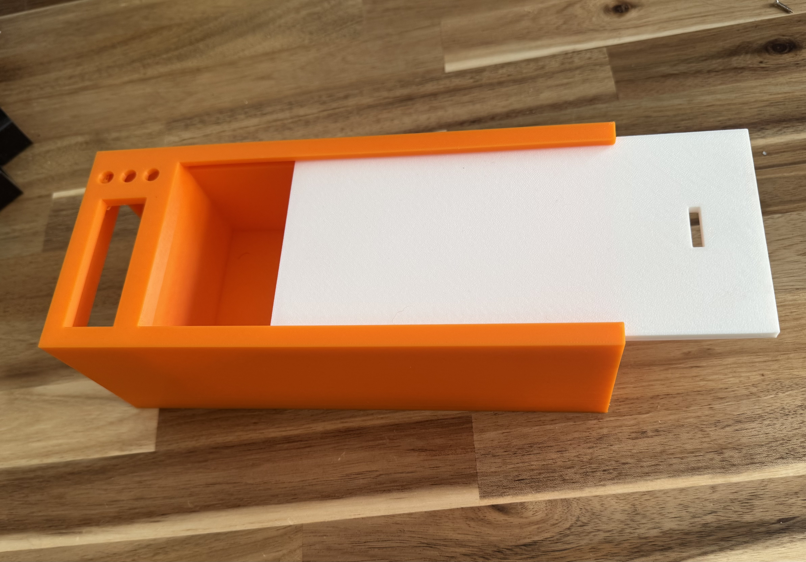

Final Project
Project Overview
Tired of slipping into "just one more scroll" until sunrise, I set out to build a bedside safe that forces better sleep habits. The result is The BuzzKill Box: a 3-D-printed enclosure that traps my phone, tracks how long it must stay put, and punishes late-night weakness with a full sensory assault—buzzer, flashing LED, and mocking screen messages. A micro-servo adds the option of true mechanical lock-down for nights when willpower needs a bodyguard.
Where the Idea Started
Problem
Phone alarm clocks keep my device in arm's reach; doomscrolling follows.
Goal
Physically separate me from the phone until a self-chosen interval expires, without relying on sketchy apps or self-discipline.
Design Pillars
- Ruthless feedback if I cheat.
- Set-and-forget UI—bedtime should be two button presses, not a spreadsheet.
- Hack-friendly: everything open, cheap, and easy to iterate.
Proving the Electronics Backbone
The box is, in its present form, nothing more than a bread-boarded bundle of components: a reed switch that senses when the lid would open, a passive piezo buzzer that howls at 2.5 kHz, an LED that changes blink-rate, and a tiny OLED that prints "BOX IS OPEN!" or "Box is shut." That simplicity is intentional. I wanted to prove the backbone of the final product—the sensing, timing, and feedback loop—before investing time in hinges, magnets, and a nice enclosure.
In the finished version this core will sit inside a 3-D-printed enclosure, pair over Bluetooth to a bedside alarm clock that shows the actual time, and (if I choose at bedtime) drive a small servo that throws a physical latch. But first the electronics had to be bullet-proof.
I began by wiring the reed switch to an ESP32's GPIO 5 and the piezo to GPIO 4, aiming for an "instant" alarm.
At first it only gave a single weak chirp—so I taught the code to ignore the tiny "bounce" the switch makes and to keep the alarm blaring for a full minute. The sound also lagged at first, so I gave the speaker a quick practice beep when the box powers up; now it's ready to scream the instant the lid moves.
Next I added a status light: it blinks slowly when everything is fine and goes into rapid-fire panic mode when I open the box.
Finally, I plugged in a little screen and had it shout "BOX IS OPEN!" or quietly reassure me with "Box is shut" so I don't have to interpret the blinking light. Each change fixed one annoyance, and by the end the whole thing felt snappy and good to go—exactly the backbone I need before worrying about everything else I plan to build on top of it.
Everything still lives on a breadboard—no box yet—because it is far easier to shuffle pins, swap parts, and rewrite code on an open bench than inside a sealed enclosure.
With the backbone working I can turn to the next phase: designing and iterating the case itself. That means choosing a hinge style that aligns the magnet perfectly with the reed switch, adding a slot for constant 3 v power, creating a tidy path for the phone's charging cable, and generally making the object look like something worthy of a night-stand instead of a science-fair prototype.
While I refine the shell I will also prototype the Bluetooth-linked alarm-clock module and test a micro-servo latch so I can decide, each night, whether I want the box merely to shame me or to lock me in completely.
For the Minimum-Viable-Product check-point, the system does exactly what it must: the moment the "lid" departs, the buzzer howls, the LED strobe rate jumps, and the OLED shouts at me—then everything quiets after a full minute or the instant I close the lid.
This reliable backbone now gives me a solid foundation to build the mechanical shell, add the Bluetooth clock, and experiment with mechanical locking, power management, and aesthetics in the final phase.
Now it's time where the electronic backbone I created finally meets a physical enclosure and starts looking like a real product rather than a tangle of jumper wires. My goal for the week, therefore, was to design and begin manufacturing the external box that will house the circuitry, screen, buttons, servo latch, and phone compartment.
I began in Fusion 360 with one hard constraint in mind: the interior cavity has to fit a full-size iPhone with a charging cable attached. That single dimension drove almost everything else. From there I carved a recessed pocket on the front face for the OLED screen and another pocket beneath it for three momentary push-buttons that will eventually let me arm, or set bedtime. On the opposite side of the housing I cut a matching slot in both the main body and the sliding lid so a micro-servo can throw a latch between them and physically lock the phone inside. I hollowed out two "service bays," one on each flank, big enough to seat the ESP32 board, a small power-management module, and the mess of jumper leads. To keep that wiring from looking like spaghetti, I routed a shallow channel under the floor that lets cables sneak from one bay to the other, then pop up through tidy rectangular ports. Finally, I drilled a tiny pass-through near the lid track for the reed-switch leads so the magnet in the lid can still tell the backbone when the box is truly closed.
Design in CAD was the fun part; printing is where reality pushed back. Even after stripping out every ounce of unnecessary plastic, the finished model is longer than the build volume of our classroom printers.
My first attempt—shrinking the model until it barely squeaked onto the bed—looked cute on the slicer preview but, once printed, was not going to work.
Rather than redesign the whole enclosure, I opened the model in PrusaSlicer and used its "cut" tool to slice the box cleanly down the middle. That let me print the two halves separately, each within the printer's limits, and then re-join them with super-glue. The seam should be invisible once I give the entire enclosure a light sanding.

By the end of the week I had a full-length, two-piece shell glued together, the screen test-fit in its cutout, and pilot holes drilled for the buttons and servo.

Next steps are to embed heat-set inserts for the lid rails, mount the electronics in their bays, and start dressing the cable runs so everything looks intentional instead of improvised. With the enclosure now physically in hand—and big enough to do the job—I can spend the remaining weeks in the the remaining aspects of this build.
With the enclosure printed and the electronic guts mostly good to go now it's time to start putting it all together and making any necessary small tweaks and add on's as we see fit.
First, I modeled the housing for the LCD screen. I wanted the pocket to cradle the display at the perfect depth, so the bezel would sit flush while the lip on the rear snapped into the PLA cut-out and held the board firmly without screws or glue.

Next came mounting the servo on the opposite wall. When I dry-fit the stock SG-90 arms, I realized they were nowhere near long enough to span the gap between the fixed wall and the sliding lid, so I opened Fusion again and sketched a thicker, longer custom horn. With that printed and swapped in, the arm now arcs cleanly over the gap and bites into a matching notch on the lid, giving a satisfyingly tight lock.
After the motion hardware was settled, I pressed all three push-buttons into their panel openings, labeled every lead, trimmed the wire bundles, and soldered pin headers so each line clicks neatly into the breadboard without stray strands.
I then measured, drilled and mouned the two reed switches—one in the lid, one in the wall—so their magnets align perfectly when the box is closed and never chatter when it's open.
Going fully portable was next on the list. I chose a 3.7 V 500 mAh Li-Po, a TP4056 charger module, and a tiny boost converter, which together give a solid eight hours of standby. A 1000 µF electrolytic capacitor across the 5 V rail catches the servo's inrush so the ESP32 never browns out. Once the layout felt right, I soldered everything into a tidy, removable harness that slips into one of the service bays.
Next, I tucked every wire run into its channel and cinched the bundles as neatly as I could to prevent anything from coming undone or unplugged.
Finally I used a heat gun to set small magnets into the side panels. Magnets hold the lid shut with a pleasant snap, keep the compartment covers in place without visible screws, and give the whole enclosure the sleek, finished look I was after.
With the core timer finished, I moved on to Lock Mode. Holding the white and red buttons together still arms the classic alarm-only countdown, but holding the red and black buttons now arms Lock Mode instead. In that path the servo instantly swings to ninety degrees, dropping its custom horn into the notch I printed in the lid and physically trapping the phone. The buzzer and LED still stand ready to shame me if I pry the lid early, but once the countdown reaches zero the servo glides back to its home angle, the latch clears the slot, and the lid slides freely.
After a few days of real-world use the box has proved its worth: my nightly doomscrolling has dropped from well over forty minutes to barely three, the LCD countdown gives just the right nudge to obey my own rules, and the servo lock has never jammed thanks to that beefy capacitor on the 5-volt rail. What matters just as much, though, is how much fun this build has been from the first breadboard beep to the final working enclosure. I'm amazed at how much I learned and how awesome it was to watch a pile of loose parts become a working device is addictive. I'm genuinely proud to have built something that solves a real problem for me, and the process has sparked a new passion for making things; the BuzzKill Box won't be my last project, just the springboard for whatever I decide to invent next.
← Back to Home